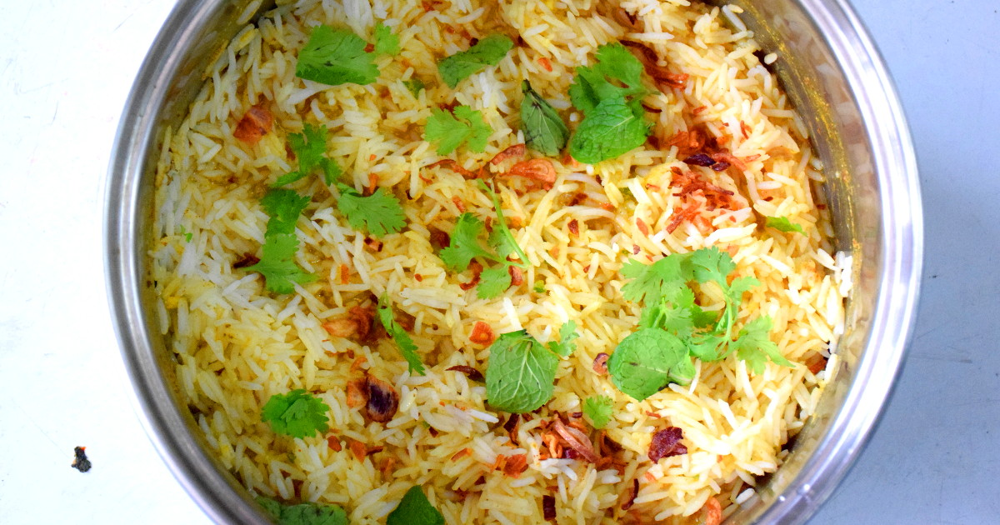

Biryani is also known as biryani, briyani or biriyani. It is a South Asian rice dish with the origin from the Indian subcontinent. The ingredients vary, but always include meat (chicken, mutton or beef), a mixture of spices, mint leaves, coriander leaves, fried onions, and yogurt. These ingredients are combined with meat and marinated for at least half a day, and then cooked together with rice, fried onions, and coriander leaves. The meat and spices will eventually flavor the rice to give a fabulous aroma and taste. Following the simple 5 steps below, you will be able to get delicous and authentic biryani rice at home without the long cooking hours with the help of MAGGI products.
| 4 tbsp Ghee | 1 Yellow Onion |
| 1 in Ginger | 2 slice Chicken Breast |
| 2.25 cups Basmati Rice | 3 cups Water |
| 1 Tomato | 2 sprigs Coriander leaf |
| 2 Stalks Mint Leaves | 0.25 cup Cashew Nuts |
| 1 Level tablespoon Fried onions | 1 packet MAGGI Nasi Briyani Paste |
Heat up wok and pour in corn oil, stir fry garlic, salted fish and bird’s eye chillies.
Add chicken, stir fry for 2 minutes.
Add rice, kailan and carrots, mix well.
Sprinkle MAGGI® CukupRasa, stir for 1 minute and serve.
| Energy | 437.07 kcal |
| Protein | 14.14 g |
| Carbohydrates | 57.51 g |
| Fats | 16.26 g |